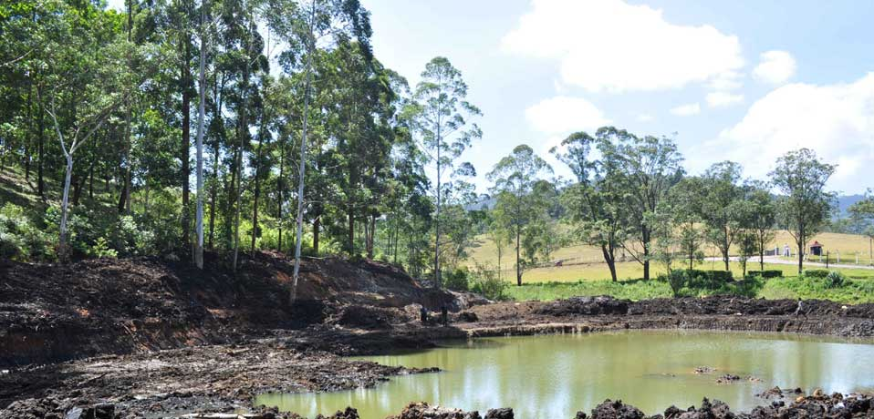
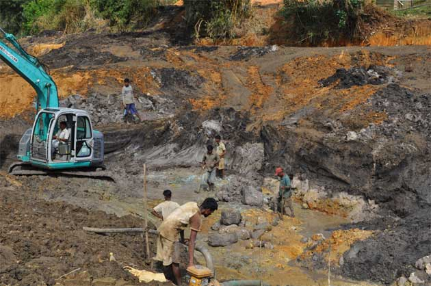
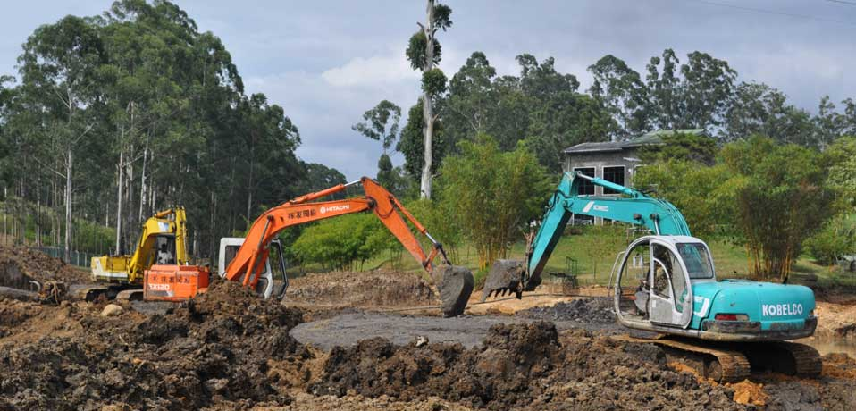
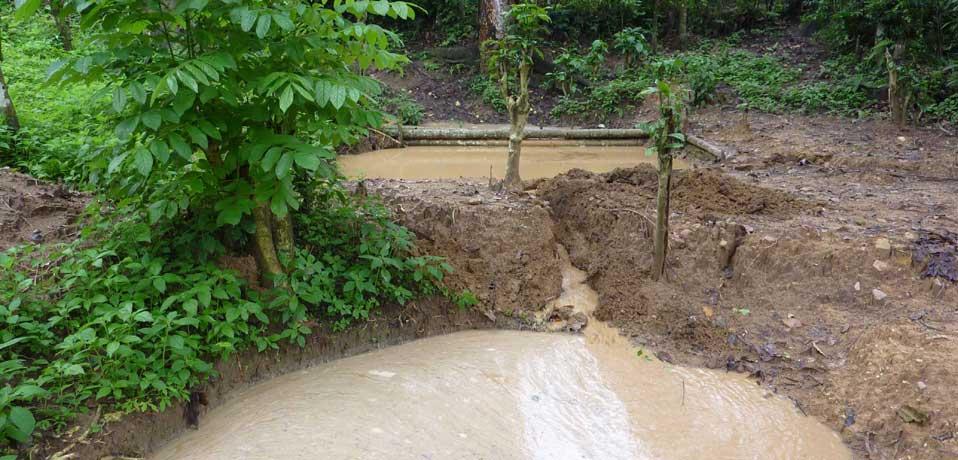

Ananda Miners pioneered mechanised mining in Sri Lanka and operates some of the largest sapphire mines in the country. That experience goes into every machine, and it is available to our customers.

We run our own sapphire mines and share our mining expertise with a wide range of customers: site planning, equipment choice and water management.

We pioneered mechanised gem mining in Sri Lanka, moving the industry from hand methods to excavators and washing plants.
We export, buy and sell valued gemstones from our own mines and trusted sources.
Lapidary services by experienced cutters, using our own AMG faceting machines.
Gemstone burning technology to bring out the best colour and clarity.
Proper management of mined water is central to how we work. At our mines, waste water is channelled through a series of settling pits so that mud and silt are deposited before the water is released into the river system.

From washing plant size to water management, we will help you plan a site that works.